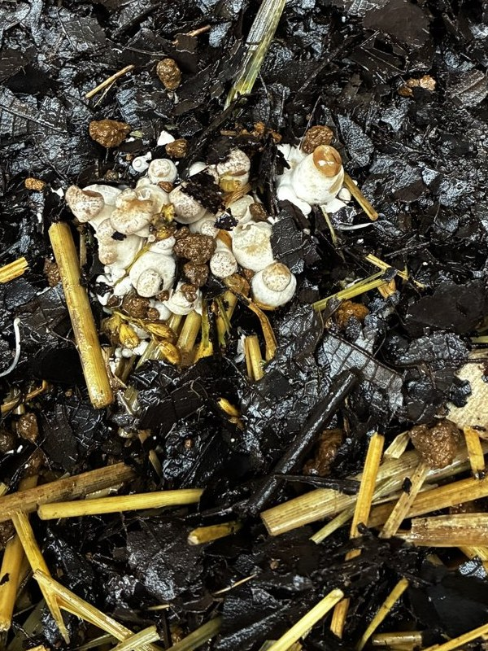

a

b

c

d

e
Preprint · Pilot observation and study protocol
Independent grower, Tanzawa–Oyama foothills, Kanagawa, Japan · Correspondence via github.com/alwittihakam-cyber/9thtarot_mushrooms/issues
paper-v1)
Licence© 2026 J. A. Wittcop. Text, figures and photographs are released under CC BY-NC-SA 4.0: share and adapt with credit, non-commercially, under the same licence.
Background. King oyster (Pleurotus eryngii, エリンギ) is produced commercially on sterilised sawdust and corncob substrates in bottles and bags. In nature it is associated with the roots of umbellifers (Apiaceae) and can act as a necrotrophic parasite of Eryngium. In the one Japanese outdoor log trial we found, it gave no fruit on any of six tree species. We found no report of growing it on fresh, unsterilised root vegetables.
Methods. Fresh carrots (Daucus carota, Apiaceae) were peeled and trimmed of leaves and stems, then buried outdoors in a pot of straw and leaf litter together with the broken-up, colonised substrate block of a commercial eringi kit (森産業, Mori Sangyo). The straw and leaf litter also served as a casing. Development was recorded by date and photographed. Five people compared the cooked mushrooms with supermarket eringi.
Results. Primordia had emerged through the casing by 10 November 2026, and mature fruit bodies were harvested by 19 November 2026. They had broad, flat to depressed, lobed brown caps with dark radial streaks over the outer half (a "zebra" pattern) on short, curved stipes, unlike the small-capped, thick-stemmed commercial form. Cooked in nabe (hot pot), they were judged "more meaty" than supermarket eringi by all four tasters who did not know which sample was which (4/4; exact one-sided p = 0.0625), and by the grower.
Conclusions. Eringi completed fruiting outdoors from kit inoculum buried with fresh carrot under a straw and leaf-litter casing. This single, uncontrolled pot does not show that carrot was used as a substrate, that carrot changes taste, or why the caps are streaked. A randomised, blinded protocol with kit-only and carrot-only controls, a blind taste panel and umami chemistry is set out to test each point.
Keywords: Pleurotus eryngii; king oyster; Apiaceae; Daucus carota; non-sterile cultivation; casing; fruit-body morphology; umami; sensory evaluation; spore slurry
Pleurotus eryngii differs in its ecology from most cultivated oyster mushrooms. In the wild it fruits from the roots and root crowns of umbellifers, especially Eryngium, rather than from wood, and a field and greenhouse study found it behaves as a facultative necrotrophic parasite of Eryngium campestre [1]. Commercial production does not use this ecology: eringi is grown indoors on sterilised sawdust, corncob and bran in bottles or bags, under controlled CO2, light and humidity.
Attempts to grow eringi outdoors on wood have failed. In a 2004–2006 programme of the Aichi Prefectural government, eringi inoculated into logs of six tree species (アカメガシワ, オオバヤシャブシ, コナラ, ツブラジイ, ホオノキ and ヤマザクラ) formed no fruit bodies; the failure was attributed to wood-decay competitors such as Trametes, given eringi's weak wood-decay ability [2]. Substrate also affects eringi quality: eringi grown on willow sawdust was rated higher for taste and texture in a sensory evaluation [3].
Carrot belongs to the Apiaceae, the family with which P. eryngii is naturally associated. The author is aware of carrot being used with eringi only in dried, sterilised form as a substrate additive, but could not trace a published source for this, and we found no report of fresh carrot root used as a substrate. The search was not systematic, and references would be welcome. If eringi can fruit from fresh Apiaceae roots in non-sterile outdoor conditions, that would offer a way of growing it that follows its natural ecology rather than wood.
This paper reports a single pilot pot, states what it can and cannot show, and sets out a protocol (P02) designed to test it, to be pre-registered before the follow-up begins.
The pot stood outdoors at the author's open-air growing site in the Tanzawa–Oyama foothills, Kanagawa Prefecture, Japan. It was watered by hand. There was no misting, air filtration or climate control.
The following were not recorded: the date of burial, the number and mass of carrots, the mass of kit material, the pot size and casing depth, and temperature or humidity. No control pots were set up.
After harvest, the carrot-pot eringi and eringi bought from a Japanese supermarket were cooked in nabe (Japanese hot pot) and tasted by five people. Four did not know which sample was which; the fifth was the author, who did. Their judgements of which sample was meatier were noted. The cooking details, the person serving and whether that person knew the samples, and any ratings were not recorded. The tasters took part informally, and no personal data were collected.
New carrot pots are now being inoculated with a spore slurry (spores from carrot-grown fruit bodies suspended in water) delivered into the buried carrots through glass watering globes pushed into the pot. The aim is to let the eringi population adapt to carrot over repeated rounds. Liquid culture is planned later. This method is described here so that its records start from the first round; it contributes no results to this paper.
Why the switch matters genetically. A kit block carries one strain: a clone of the kit's dikaryotic mycelium. A spore slurry carries many genetically different spores. P. eryngii is tetrapolar and heterothallic [4], so compatible spores must germinate and mate to form a fertile dikaryon. Each fruiting patch from slurry may therefore be a new genotype, not the kit strain. Selection for carrot adaptation can act only through the choice of which fruit bodies supply the next round, and a liquid culture made from tissue of a chosen fruit body would fix that genotype.
For each new pot the author records: the inoculum type (kit, slurry or liquid culture); the source fruit body of each slurry or culture (photograph, date, pot); the generation number (kit = G0, first slurry from carrot-grown caps = G1, and so on); and a retained spore print or tissue sample from each source.
| Date (2026) | Observation |
|---|---|
| 10 November | A single cluster of white primordia with tan cap tips breaks through the straw and leaf-litter casing (Fig. 1a) |
| by 19 November | Mature fruit bodies harvested, filling a kitchen tray (Fig. 1b–e); tasting (§2.3) |
Fruit bodies arose from the casing, with stipe bases rooted in casing material and pale fragments of substrate (Fig. 1b). Whether those bases were attached to carrot tissue, to kit material or to both was not checked.

| Feature | Carrot-pot fruit bodies | Typical commercial eringi |
|---|---|---|
| Cap | Broad (several cm), flat to slightly depressed, lobed and wavy margin, mid-brown | Small, convex, on a thick stem |
| Cap surface | Dark brown radial streaks over the outer half ("zebra"); centre evenly brown | Even, pale grey-brown |
| Gills | Cream, crowded, strongly decurrent | Same |
| Stipe | Short to medium, often curved, tapering to a rooting base | Long, thick, straight, cylindrical |
No measurements were taken. The description comes from photographs and is qualitative.
All four blind tasters judged the carrot-pot eringi meatier than the supermarket eringi, as did the author. In the author's words:
"The taste of them is more meaty."
If each blind taster had been equally likely to choose either sample, the probability that all four would choose the carrot-pot eringi is (½)4 = 1/16 (exact binomial test, one-sided, p = 0.0625; two-sided p = 0.125). With four tasters, 0.0625 is the smallest one-sided p-value attainable, so this design could not reach the conventional 0.05 threshold. The calculation assumes the tasters judged independently, which was not controlled.
Eringi completed fruiting outdoors, in non-sterile straw and leaf litter, from kit inoculum buried with fresh carrot. That is worth reporting because the only Japanese outdoor trial we found, on logs, gave no fruit [2]. It suggests that a casing which holds moisture and CO2 at the surface, combined with an already colonised inoculum, can carry eringi through to fruiting outside sterile culture.
That carrot was the substrate. A colonised kit block holds enough nutrition to fruit by itself. Without a kit-only pot we cannot tell whether the carrot added anything, served only as a moist anchor, or was colonised at all. No carrot was split to look for mycelium.
That carrot changes taste. The supermarket eringi differed in far more than substrate: (i) a different, unknown strain; (ii) lower freshness, probably days from harvest rather than hours; (iii) a different maturity, harvested young with a small cap, whereas these caps were broad and mature; and (iv) a different growing system, indoors on sterile substrate under managed CO2 and low light. Each can change perceived meatiness. Four tasters were blind to the source, which limits expectation bias, but the two mushrooms look very different, so tasters could tell them apart, and a server who knew the samples could cue them. Cooking both samples in one shared nabe broth would, if anything, tend to blur a difference rather than create one. The tasting shows the result is worth testing properly; it cannot say why the mushrooms tasted different.
Why the caps look as they do. The broad cap and short stipe may need no carrot effect. Commercial eringi is grown at elevated CO2 (about 2,400 ppm was optimal in one bottle-culture trial), and CO2 is managed partly because it suppresses cap development [5]. Under a casing that vents to open air, in daylight, a broad-capped form is plausible. For the radial streaks we have three untested hypotheses: (i) light raises cap pigmentation, deposited unevenly along radial hyphae; (ii) drying by wind tightens or cracks the cap cuticle, exposing darker tissue in radial lines; (iii) fine radial patterning is normal for broad caps grown at low CO2 in full light.
If a blind panel confirms a difference, several mechanisms deserve testing. Substrate can change the free amino acids and 5′-nucleotides behind umami: log-grown maitake had more MSG-like and sweet amino acids and more 5′-GMP than sawdust-grown [6], and soup made from log-grown nameko was preferred in a sensory test, with higher free amino acids [7]. Daylight and lower water content in an outdoor fruit body might concentrate flavour. In future slurry-grown pots, a different genotype could also carry its own flavour. None of these was measured here.
The move to spore slurry (§2.4) turns the carrot pots into an informal selection line, in which the fruit bodies that do best on carrot supply the next round's spores. Whether this produces a line better adapted to carrot is a fair question but easy to confound: slurry pots hold a shifting mix of new genotypes, so any change could be chance, genotype or carrot. The cleaner test is to fix the selected line as a tissue-clone liquid culture and grow it beside the original kit strain on carrot (§6).
Protocol P02 is published in the data repository and will be registered on OSF before inoculation in spring 2027. It tests each claim separately (Table 3).
| Question | Test |
|---|---|
| Did the carrot add anything, or did the kit fruit alone? | Three arms in 12 randomised blocks (36 plots): carrot + kit, kit only (same mass and depth), carrot only (no inoculum). At day 60, carrots are split and the mycelium-covered area scored blind. |
| Is it really meatier? | Blind panel of 24 under red light: coded samples, Williams-balanced serving order, pan-seared slices without salt, umami/savoury-meaty intensity on a 0–100 line scale. Simulated power 0.74 for a 10-point difference and 0.97 for 15 points (SD of differences 18, assumed). |
| Is there more umami chemistry? | HPLC free amino acids and 5′-nucleotides, combined as equivalent umami concentration [8], per gram dry weight, 12 plot replicates per arm. |
| Meatier than commercial eringi? | The same panel against commercial eringi of the same strain, bought fresh, with tasters and server both blind. |
| Potency | Ergothioneine (HPLC) and β-glucan (enzymatic assay kit). |
| Why the streaks? | Within carrot + kit plots, half of each plot under 70% shade cloth with a damp hessian skirt; streaking scored 0–3 from standard photographs by a blind scorer. |
| Is it P. eryngii? | Spore prints from every fruiting plot; ITS barcoding of at least three fruit bodies, compared with the source kit. |
| Does carrot select an adapted line? | Tissue-clone liquid culture from the best slurry-grown fruit body against the original kit strain (G0), both on carrot, in six randomised blocks: colonisation, blind taste, umami chemistry and ergothioneine. |
All arms are harvested at the same stage (cap margin still inrolled, cap ≤ 6 cm), on the same day, from the first flush, with the plot as the experimental unit. Yield is deliberately not an outcome. Results will be published whatever their direction.
Author contributions. J. A. Wittcop conceived and carried out the work, took the photographs, ran the tasting, and is responsible for the content of this paper.
Funding. None.
Competing interests. The author plans a small mushroom-growing business, which could benefit from a favourable result. For this reason the follow-up study is randomised and blinded and will be pre-registered.
Ethics. The tasting was an informal comparison of cooked food among five volunteers. No personal data were collected, and no formal ethics review was sought.
Data availability. Photographs (full resolution), the observation record (OBS-01), protocol P02 with its power calculations, the randomisation script and data templates are openly available at github.com/alwittihakam-cyber/9thtarot_mushrooms; the version matching this paper is tagged paper-v1.
Acknowledgements. The author thanks the four tasters.
Suggested citation: Wittcop J. A. (2026). King oyster mushroom (Pleurotus eryngii) fruiting outdoors from fresh, unsterilised carrot: a pilot observation, an altered morphology, and a protocol to test it. Preprint, version 1, 19 November 2026.